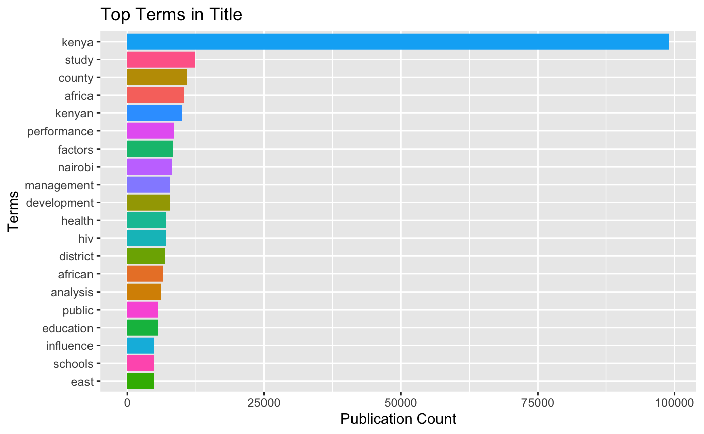
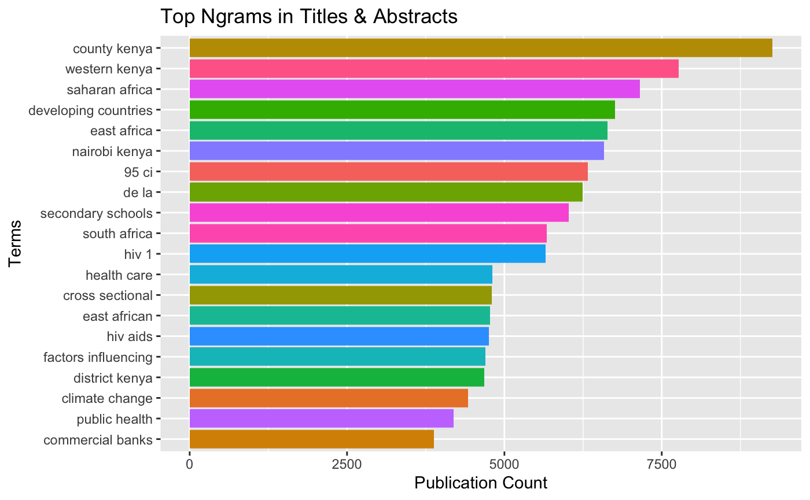

Text mining involves extracting useful information from text fields. Text mining is increasingly tied in with machine learning approaches using tools such as spaCy. In this session we will demonstrate some basic approaches to text mining using the tidytext package with R. If you want to learn more about text mining in R Text Mining with R by Julia Silge and David Robinson is strongly recommended. For Python fans it doesn’t get much better than SpaCy by Matthew Honnibal and Ines Montani at Explosion AI. You may also want to try quanteda and spacyr from Ken Benoit and Kohei Watanabe at the LSE.
The Kenlit package contains the following resources for text mining and a basic function text_mine() to help you get started.
The main fields available for text mining in Kenlit are
You will find examples using these fields in the documentation for the text_mine() function. Under the hood the text_mine() function is powered by the tidytext package. The kenlitr::texts dataset combines the title and abstract fields into one data set for text mining and machine learning.
Let’s take a look at the keywords first.
## # A tibble: 6 x 1
## keywords
## <chr>
## 1 Education; Government Sponsored Programs; Kenya; Organization And Admini…
## 2 Adolescents; Adolescents, Female; Africa; Africa South Of The Sahara; Ag…
## 3 TICKS; TISSUE CULTURE
## 4 CATTLE; EXPERIMENTAL LAB STUDY; KIDNEY; RINDERPEST; VERTEBRATE VIRUSES; …
## 5 Africa; Africa South Of The Sahara; Americas; Asia; Brazil; Case Studies…
## 6 CATTLE/diseases; DISTOMIASIS/veterinary; ECHINOCOCCOSIS/veterinaryWe can see that many records have keywords that are grouped together with “;” as the separator. We can also see that athre are mixed cases. What we want to do is
The text_mine function will do that for us.
## Selecting by n## # A tibble: 20 x 2
## terms n
## <chr> <int>
## 1 kenya 1701
## 2 africa 1219
## 3 developing countries 891
## 4 africa south of the sahara 704
## 5 eastern africa 657
## 6 english speaking africa 643
## 7 hiv 488
## 8 population 473
## 9 demographic factors 456
## 10 malaria 451
## 11 research methodology 402
## 12 diseases 400
## 13 health 309
## 14 population dynamics 289
## 15 population characteristics 277
## 16 sub-saharan africa 277
## 17 family planning 276
## 18 research report 248
## 19 economic factors 237
## 20 studies 237We now have a much clearer idea of the keywords used by authors. We can use this data to do things such as refining our search. We can see that health topics such as the HIV and malaria along with demographic factors are prominent in the results. Possibly the specialisit Medical Subject Headings (MeSH) terms will give us a clearer idea.
## Selecting by n## # A tibble: 20 x 2
## terms n
## <chr> <int>
## 1 humans 22827
## 2 female 14774
## 3 male 11986
## 4 kenya 9677
## 5 animals 9292
## 6 adult 8734
## 7 adolescent 5907
## 8 middle aged 5332
## 9 child 4665
## 10 child, preschool 3827
## 11 kenya/epidemiology 3792
## 12 young adult 3607
## 13 infant 3569
## 14 cross-sectional studies 2661
## 15 aged 2477
## 16 prevalence 2356
## 17 pregnancy 2335
## 18 risk factors 2067
## 19 infant, newborn 1914
## 20 developing countries 1705The top terms are not wildly informative except that we learn that in the health field there is a stronger focus on females than males. Adolescents are also prominent along with children and preschool children.
We could use one or more of these terms to filter the dataset. One way to do this is to identify all of the records containing the term Female or female in the mesh_terms and then filtering the dataset down to only those records. Here we just show the titles.
library(dplyr)
library(stringr)
kenlitr::lens %>%
mutate(female_health = str_detect(mesh_terms, "Female|female")) %>%
filter(female_health == TRUE) %>%
select(title) %>%
head(20)## # A tibble: 20 x 1
## title
## <chr>
## 1 Recent smallbox epidemics in Ethiopia and Somalia, human monkey pox vir…
## 2 Trypanosoma congolense: III. Serological responses of experimentally in…
## 3 Analysis of a series of laparoscopic procedures performed in Nairobi.
## 4 A zoonotic focus of cutaneous leishmaniasis due to Leishmania tropica a…
## 5 The Immunity Induced in Cattle and Sheep by Inoculation of Neurotropic …
## 6 Two simple antigen-detection enzyme immunoassays for the diagnosis of T…
## 7 Menarche in African girls in some post-secondary institutions in Kenya
## 8 The pattern of chronic gastric ulcer at Kenyatta National Hospital (K.N…
## 9 Comparison of mosquito nets, proguanil hydrochloride, and placebo to pr…
## 10 Intergroup Encounters among Free-Ranging Vervet Monkeys
## 11 Infection and Disease After Perinatal Exposure to Chlamydia trachomatis…
## 12 Résidus d'antibiotiques dans le lait, après application intramammaire, …
## 13 Mental health problems in Kenya today--a review of research.
## 14 Phlebotomus (Phlebotomus) duboscqi from Kenya: A new record
## 15 Development of Leishmania major in Phlebotomus duboscqi and Sergentomyi…
## 16 Modification of Sand Fly Biting Behavior by Leishmania Leads to Increas…
## 17 Separation and individuation in an African society: the developmental t…
## 18 A Comparative Study of Users of Long-Term Contraceptive Subdermal Impla…
## 19 Epidemic kerato-conjunctivitis.
## 20 Effect of mass chemotherapy and piped water on numbers of Schistosoma h…A quick review of the titles tells us that the term female is being used both to refer to humans and to animals. So, we would probably want to filter again. We won’t go there now but we can see how we can start to use the results of keyword analysis to refine the data to subjects of interest and drill down into the data.
The main body of texts that are normally available to us are found in the titles and abstracts. The kenlitr::texts table extracts these fields from the lens table to make them easier to text mine. Note that because of their size (276,998 rows) this can take some time to do. We will focus here on the titles as the quickest to return results. We will also visualize these results by setting viz = TRUE.
kenlitr::lens %>%
kenlitr::text_mine(., col = "title", top = 20, token = "words", title = "Top Terms in Title", x_label = "Terms", y_label = "Publication Count", viz = TRUE)## Selecting by n
Individual works like this on their own are not hugely informative. Note that the use of the stacked bar chart for exploratory analysis gives us an idea but the term kenya is so dominant it is hard to gain a sense of proportion. We would want I think to exclude Kenya for a clearer view here. We do however see that management and development appear promimently along with health, HIV and references to counties and districts which hints at geographic information in this data.
We can try to improve the information content by parsing this data into multi-word phrases (ngrams). In general, from past experience, two word phrases are the most informative.
Here we will use the combined titles and abstracts. Note that this can take some time to run.
kenlitr::texts %>%
kenlitr::text_mine(., col = "text", top = 20, token = "ngrams", n_gram = 2, title = "Top Ngrams in Titles & Abstracts", x_label = "Terms", y_label = "Publication Count", viz = TRUE)## Selecting by n
This data reveals that we have some apparent noise that we would like to filter out such as “95 ci” and “de la” (“of the” in Spanish).
We take the texts data and convert into sentences (to pass to spaCy). What we want to know is which sentences contain a reference to a place. We will add a sentence id column that we will join with the doc_id column to make matching the precise sentence containing a term easier later on (otherwise we will identify documents not sentences). The separator when uniting the doc_id and sentence ids is automatically and underscore using tidyr::unite(). The original doc_id field will disappear. At a later stage we will use dplyr::separate to get back to the original document id
library(tidytext)
sentences <- kenlitr::texts %>%
unnest_tokens(text, text, token = "sentences", to_lower = FALSE) %>%
add_column(sent_id = 1:nrow(.)) %>%
unite(doc_id, c("doc_id", "sent_id"))We will use the python library spaCy in the R package spacyr to extract nounphrases from the kenya_places data.frame.
To install spacyr on your system follow the instructions at https://github.com/quanteda/spacyr. It can be a little bit involved but is worth it.
library(spacyr)
spacyr::spacy_initialize(model = "en_core_web_sm")
# spacyr expects TIF compliant data frame consisting of doc_id and text column
# use select to selct and rename
kenya_match <- kenlitr::kenya_places %>%
select(doc_id = geonameid, text = asciiname)
# extract nounphrases
kenya_match <- spacy_extract_nounphrases(kenya_match, output = "data.frame") %>%
rename(geonameid = doc_id)This identified 28,591 root terms from the original data frame containing 29,598 rows.
Let’s take a look at the top ranking names. We will also do some tidying up to remove the term Kenya (as it defines the dataset) and terms that are two characters or less as these will commmonly generate noise.
places_root <- kenya_match %>%
count(root_text, sort = TRUE) %>%
mutate(nchar = nchar(root_text)) %>%
filter(nchar > 2) %>%
mutate(root_text = str_trim(root_text, side = "both")) %>%
filter(root_text != "Kenya")
places_rootIf we try and match 16000 terms against 1 million sentences in some kind of loop in R it will take a very long time. An alternative way forward is to compare the noun phrases we just created against a word list. That way we will know which sentences contain a candidate place names. Because we want to identify place names that are proper names we will change the default to_lower from TRUE to FALSE. We do not need to specify the tokens argument because the default is words. We then create a new column called places_root to mark up the matches before filtering to only those that match.
sentences_words <- sentences %>%
unnest_tokens(text, text, to_lower = FALSE) %>% # maintain uppper case
mutate(places_root = .$text %in% places_root$root_text) %>% # compare using %in%
filter(places_root == TRUE) # filter to TRUE matchesWe have now reduced out 1.1 million sentences to 452,066 references to 149,138 of our places roots for further analysis (based on sentences_words %>% count(doc_id)). We now know two important things that we didn’t know before:
For moving to machine learning approaches this means we have the basis for TRUE/FALSE labelled datasets for training and evaluation.
However, when we take a look at the root terms we can see that terms such as Army or World that appear in place names in Kenya are not necessarily going to result in valid places (e.g. Kenya’s Army, Kenyan Army etc.).
At this juncture lets mark up the sentences table as TRUE or FALSE. Here we use the doc_id in each table as the basis for the match (many docs contain more than one of our places root terms and so we want to reduce them to individual sentences).
We can see in the print out of the top ten rows that the last result (which matched on Kakamega and separately matched on Forest) refers to a valid place. However, there will be other sentences where the match is a false positive.
sentences_true <- sentences %>%
filter(places_root == TRUE)
# create a false label set with the same number of rows as the true set for use in training and evaluation
sentences_false <- sentences %>%
filter(places_root == FALSE) %>%
.[1:259969,]Inspect the true version
# write the two sets of sentences to json as a single labelled object to read in to Spacy for model building.
# spacy (prodigy) is expecting data labelled under "answer": "accept" or "reject" in json format (see below) so let's adjust the column names
kenya_spacy <- bind_rows(sentences_true, sentences_false) %>%
rename(answer = places_root) %>%
mutate(answer = str_replace(answer, "TRUE", "accept")) %>%
mutate(answer = str_replace(answer, "FALSE", "reject"))
# save to R for reference
#save(kenya_spacy, file = "kenya_spacy.rda", compress = "xz")
# write to json lines (jsonl) as spacy preferred format and cross check
jsonlite::stream_out(kenya_spacy, file("kenya_spacy.jsonl"))We are now in a position to import the data into spaCy to update the machine learning model with Kenya specific data.